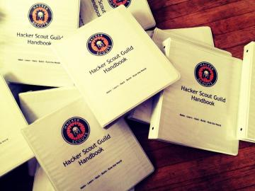
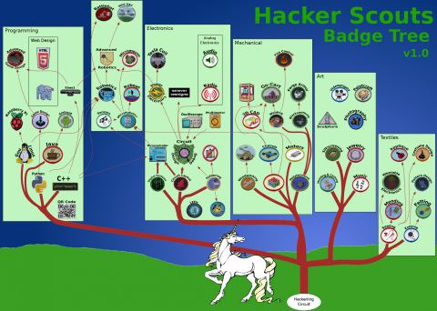

Curiosity Hacked Guild
 The Curiosity Hacked Guild is a weekly scouting program for older children (8 and up) who are ready for more complex skill building and a focus on their individual goals while building relationships within a community. The program is designed to balance between structure and autonomy, uniquely addressing the developmental, intellectual, and social needs of this age group. Every Guild begins with the Hackerling Circuit project, which is an Arduino Shield (circuit board) that gives all of our scouts a well rounded education in STEAM concepts and exposing them to the fundamentals of skills, resources, and ideas. Topics covered include circuit and hardware science and function, soldering, LEDs, sewing, design, laser cutting, and more.Not only does this project give our kids a strong foundation to work from, but it also allows them the opportunity to make autonomous decisions around their own interests and what badges they may want to pursue later on. Every meeting also includes a short activity that provokes thought and discussion on one of our core values. Once members complete the Hackerling Circuit Badge requirements, members split into smaller crews to pursue Badges in the areas of their own interest. Meeting also include group projects and field trips that offer an opportunity to try new skills and explore ideas.
